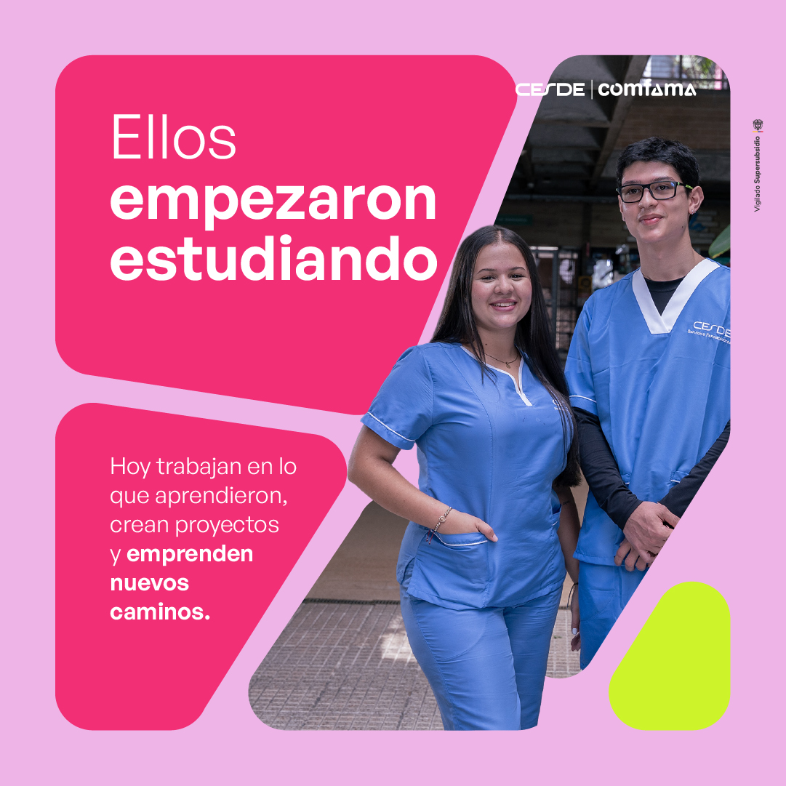
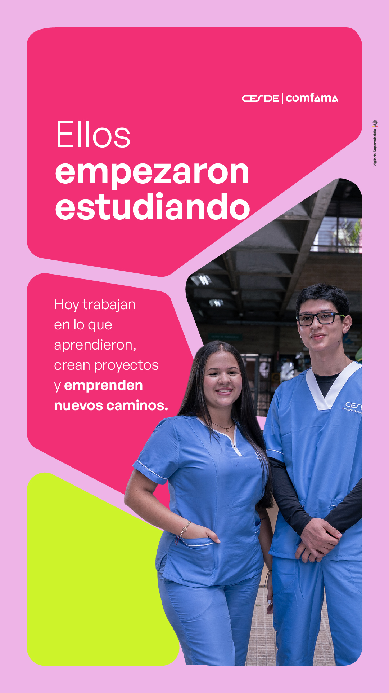

Historias de egresados
Técnicos Laborales · Medellín, Bello y Rionegro
Lo que aprendemos puede acompañarnos mucho más allá del aula.
Tal vez la próxima historia que contemos sea la tuya. ✨
Publicación + historiaActivo